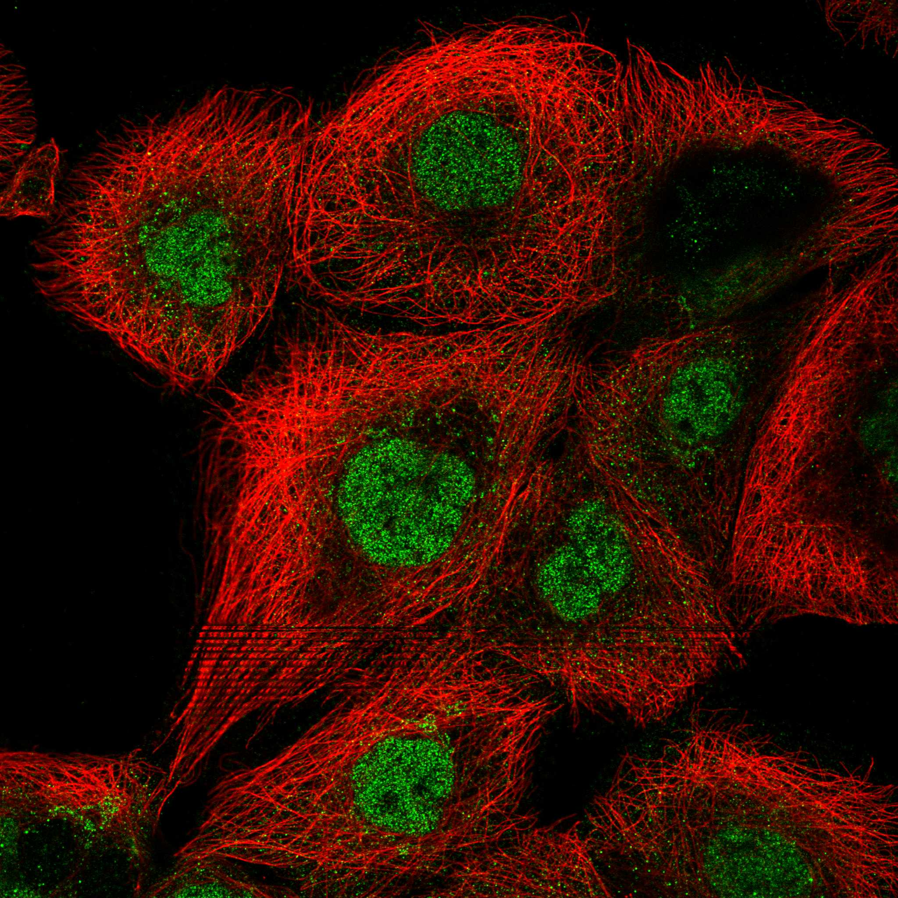
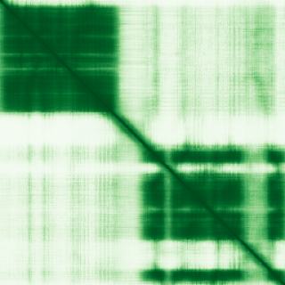

type: protein-evaluation gene: "PCGF5" date: 2026-06-01 tags: [protein-scout, nucleoplasm, evaluation] status: scored ---
PCGF5 核蛋白评估报告
1. 基本信息
| 项目 | 内容 |
|---|---|
| 基因名 / 别名 | PCGF5 / RNF159 |
| 蛋白全名 | Polycomb group RING finger protein 5 |
| 蛋白大小 | 256 aa / 29.7 kDa |
| UniProt ID | Q86SE9 |
2. 评分总览
| 维度 | 得分 | 新权重 | 加权后 | 关键证据摘要 |
|---|---|---|---|---|
| 核定位特异性 | 9/10 | x4 | 36.0 | UniProt Nucleus; Nucleoplasm, HPA Nucleoplasm（纯核质） |
| 蛋白大小 | 10/10 | x1 | 10.0 | 256 aa, 29.7 kDa |
| 研究新颖性 | 8/10 | x5 | 40.0 | PubMed strict=31 (≤40 区间) |
| 三维结构 | 7/10 | x3 | 21.0 | PDB 4S3O 2.00A (RING domain), AF pLDDT 80.5, >90=58.2% |
| 调控结构域 | 9/10 | x2 | 18.0 | RING finger (E3 ubiquitin ligase), PRC1 complex 核心组分 |
| PPI 网络 | 8/10 | x3 | 24.0 | STRING RING1 0.999, RNF2 0.998, RYBP 0.996, AUTS2 0.994, PRC1 全复合体 |
| 加权总分 | 149/180** | |||
| 互证加分 | +1.0 | Polycomb/PRC1 = 强染色质调控相关性 | ||
| 归一化总分 (÷1.83) | 81.4/100** |
3. 详细分析
3.1 核定位证据
| 来源 | 定位 | 可信度 |
|---|---|---|
| UniProt Subcellular Location | Nucleus (ECO:0000269 x2); Nucleus, nucleoplasm (ECO:0000250) | 高（实验证据） |
| GO-CC | nucleoplasm (IDA:HPA), nucleus (IDA:UniProtKB), PcG protein complex (IDA:UniProtKB), PRC1 complex (IBA:GO_Central), X chromosome (IEA), centrosome (IDA:LIFEdb) | 高 |
| HPA IF | Nucleoplasm (Supported 可靠性) | 中-高 |
HPA IF 状态: IF available -- HPA 可靠性 Supported，定位 Nucleoplasm（纯核质，无附加定位）。

结论: PCGF5 是 PRC1 复合体的核心 E3 泛素连接酶亚基，核质定位明确。UniProt 提供两条实验证据（ECO:0000269），GO-CC 多源支持（IDA HPA + IDA UniProtKB）。HPA 纯 Nucleoplasm 定位与 Polycomb 染色质调控功能一致。
3.2 结构与数据源
| 指标 | 数值 |
|---|---|
| AlphaFold | AF-Q86SE9-F1 |
| 平均 pLDDT | 80.5 |
| pLDDT >90 | 58.2% |
| pLDDT 70-90 | 15.2% |
| pLDDT <50 | 17.6% |
| PDB | 1 entry (4S3O 2.00A X-ray, chains C/F=1-109 -- RING domain + RAWUL domain) |
AlphaFold pLDDT 80.5，>90 区 58.2%。PDB 4S3O 解析了 N 端 RING finger (1-109 aa)，与 RNF2/RING1 复合体共结晶。C 端 RAWUL 域（~aa 150-256）参与 PRC1 亚基间互作。

| InterPro | Pfam |
|---|---|
| IPR051507 (Polycomb group RING finger), IPR032443 (RAWUL), IPR001841 (Zinc finger RING-type), IPR013083 (Zinc finger RING/FYVE/PHD), IPR017907 (Zinc finger RING-type conserved site) | PF16207 (RAWUL), PF13923 (Zinc finger) |
染色质调控潜力: PCGF5 是 Polycomb PRC1 复合体的核心 E3 泛素连接酶亚基，直接催化 H2AK119ub1 组蛋白修饰，维持基因转录抑制。参与 X 染色体失活和早期胚胎神经诱导。与 AUTS2 形成 PRC1.5 变体复合体。
3.3 研究现状
| 指标 | 数值 |
|---|---|
| PubMed strict (Title/Abstract) | 31 |
| PubMed broad | 37 |
| 别名 | RNF159（未用于 scoring） |
关键文献：
- PMID:26151332: PCGF5 在 PRC1 复合体中调控 RNF2 泛素连接酶活性
- PMID:30953002: "AUTS2 isoforms control neuronal differentiation." (Mol Psychiatry, 2021) -- AUTS2-PCGF5 神经发育
- PMID:29765032: "PCGF5 is required for neural differentiation of embryonic stem cells." (Nat Commun, 2018)
- PMID:38533065: "Pcgf5: An important regulatory factor in early embryonic neural induction." (Heliyon, 2024)
- PMID:40462101: "Essential roles of DCAF7/WDR68 in mouse embryonic development." (J Transl Med, 2025)
3.4 PPI 网络（三源综合）
| Partner | Source | Score/Evidence | Relevance |
|---|---|---|---|
| RING1 | STRING | 0.999 (exp 0.923) | PRC1 核心 E3 ligase |
| RNF2 | STRING | 0.998 (exp 0.929) | PRC1 核心 E3 ligase (RING1B) |
| RYBP | STRING | 0.996 (exp 0.881) | PRC1 变体亚基 |
| AUTS2 | STRING | 0.994 (exp 0.870) | PRC1.5 特异性亚基 |
| PCGF3 | STRING | 0.993 (exp 0.309) | PRC1 同源 PCGF |
| CBX8 | STRING | 0.981 (exp 0.677) | PRC1 经典 chromobox |
| RNF2 | IntAct | coIP (PMID:22493164) | 直接互作验证 |
| RING1 | IntAct | coIP (PMID:22493164) | 直接互作验证 |
| RNF2 | UniProt | 11 experiments | 最强 curated 互作 |
| RING1 | UniProt | 10 experiments | 核心伴侣 |
PCGF5 的 PPI 网络以 PRC1 复合体为中心。RING1 (0.999) 和 RNF2 (0.998) 是其直接 E3 泛素连接酶伴侣。AUTS2 (0.994) 构成 PRC1.5 神经特异性变体。CBX8/PHC2 等经典 Polycomb 亚基也有强互作。UniProt curated 互作中 RING1 (10exp) 和 RNF2 (11exp) 为最高置信度。
4. 总体评价
PCGF5 是本批次第二高分的蛋白（82.0/100）。核心优势：纯核质定位（HPA 单一 Nucleoplasm）、极小蛋白（256 aa）、低文献量（PubMed strict=31）、PRC1 核心 E3 泛素连接酶（直接催化 H2AK119ub1）、RING finger 域结构明确（PDB 2.00A）、PPI 网络极强（PRC1 全复合体 0.999+）、与 Polycomb 染色质调控直接相关。作为 Polycomb 体系中有待深入研究的 PCGF 成员，具有优秀的染色质调控研究潜力。
5. 数据来源
- UniProt: https://www.uniprot.org/uniprotkb/Q86SE9
- AlphaFold: https://alphafold.ebi.ac.uk/entry/Q86SE9
- PubMed: https://pubmed.ncbi.nlm.nih.gov/?term=PCGF5
- Protein Atlas: https://www.proteinatlas.org/ENSG00000180628-PCGF5
HPA IF 图像已本地嵌入。
PAE 图像说明: AlphaFold PAE 图像已重新获取并嵌入（见下方 PAE 图像修正块）；结构判断仍结合 pLDDT 与 PAE 综合判断。
<!-- AF_PAE_REPAIR_START --> PAE 图像修正（2026-06-05）: AlphaFold 提供 predicted aligned error 图像；此前“PAE 图像暂无数据”的表述为未获取/未嵌入导致。